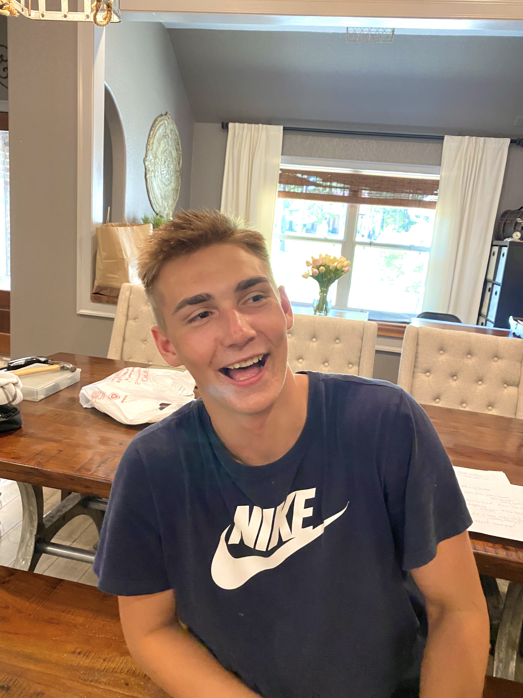
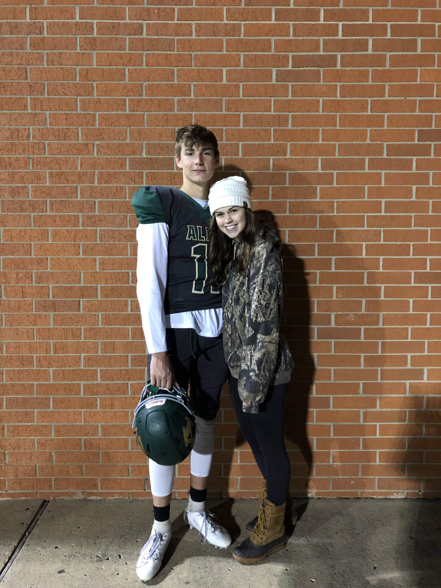
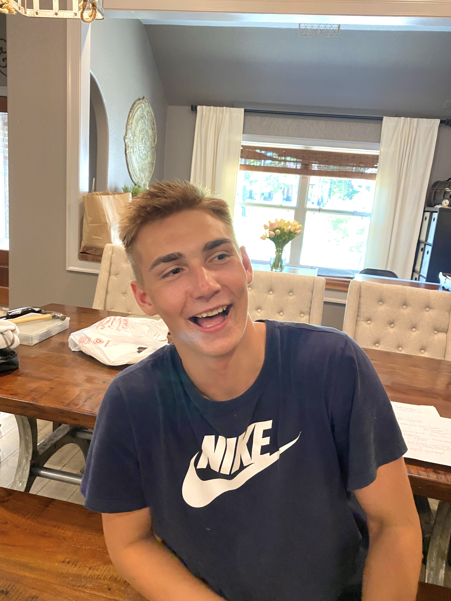
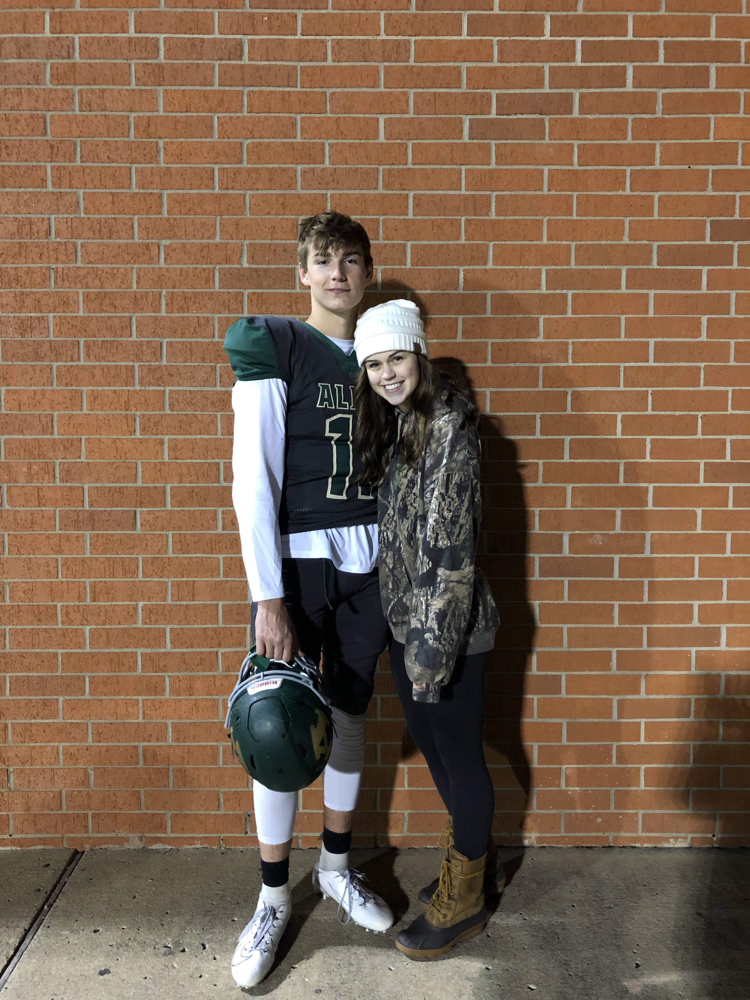
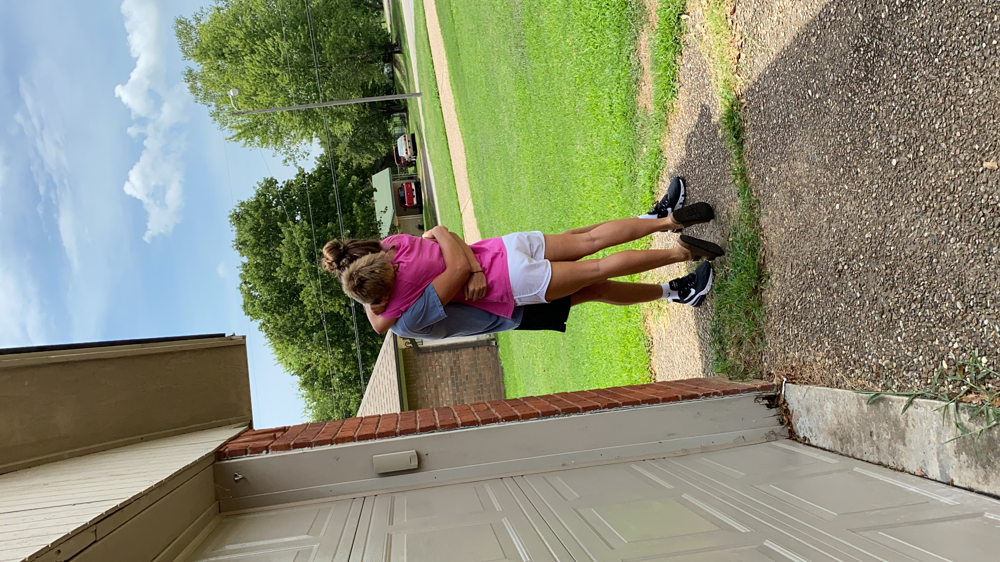
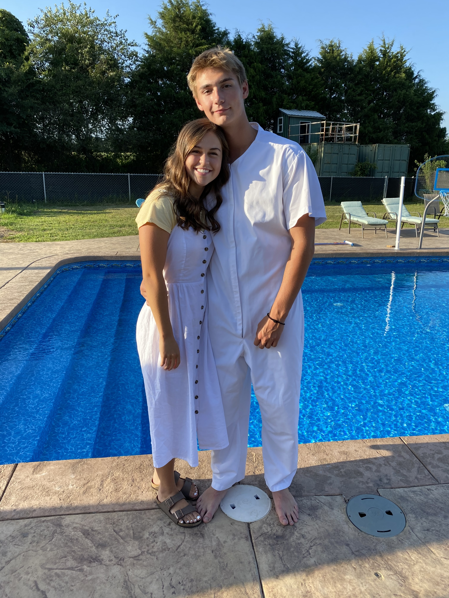
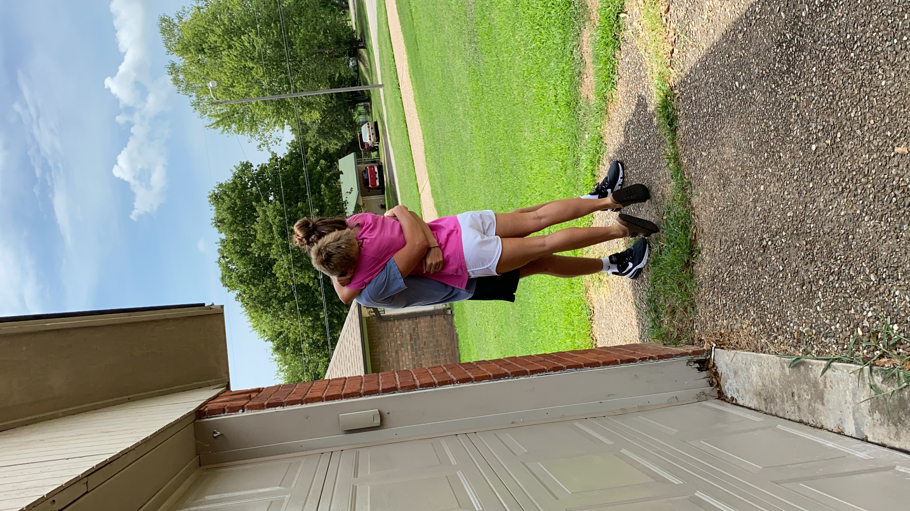
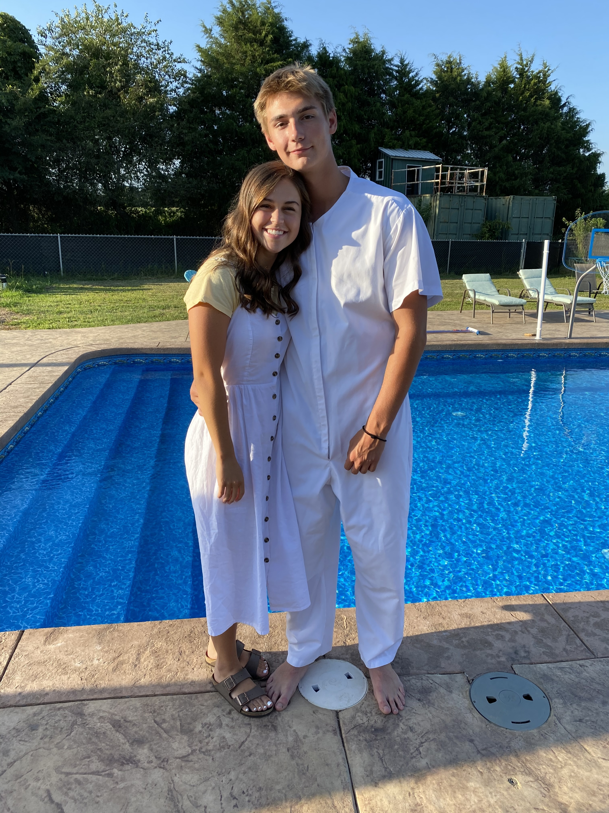

Bestfriends |
Dating |
Relationship after Breakup |
Go to Eternal Elegance Events Professional Page
Our Story
- Bestfriends (September 29, 2017 - January 11, 2019)
- We met when I moved to Arkansas right before my freshman year of highschool
- He was 14 years old and I was 15, but we were in the same grade
- I went to a party and he followed me around "like a puppy" (his words)
- We became great friends and loved spending as much time together as possible
- He was not a member of the church but loved the peace that was felt in our home compared to his
- He became interested in what made our family so happy compared to than everyone else he knew
- After about a year of being bestfriends, we both knew that we really cared about each other and wanted to become boyfriend and girlfriend
- Dating (January 12, 2019 - April 21, 2021)
- He asked my dad permission to date me on January 12, 2024 and we became official
- We were so in love and almost inseperable
- Even when I got injured in sports, he did too (not purposefully), and we even received physical therapy treatment provided by our school together
- The more time we spent together, the more he became interested in my family's faith and beliefs
- Brayden attended early-morning seminary with me for a year
- Brayden decided he wanted to take the missionary lessons
- My mental health plumetted the second time I got injured and he loved and supported me through it all
- My dad received a job offer in Dallas, Texas and my family was relocated there right before my Senior year
- A month after moving, Brayden sent me a message letting me know that he had set a baptismal date with the missionaries
- My family and I returned to Arkansas to be at Brayden's baptism
- Brayden and I did all within our power to maintain our long-distance relationship
- My mental health continued to decline
- We both got accepted into BYU
- I began to overthink our relationship and whether he was really going to be my future husband
- Relationship after Breakup (April 22, 2021 - Present)
- I let him know that I felt like we needed to break up so that I could make sure that he really was the man I wanted to marry
- We discussed the importance of not losing our friendship
- He respected my choice and continued to look for ways to show how much he loved me
- We went to our freshman year at BYU
- We still spent a lot of time together
- I realized that I wasn't really going on dates with anyone else, like I had planned on doing when we broke up
- We had a conversation about how I needed to branch out more - that was the last straw for him
- To protect himself, he distanced himself from me
- He began to spend all his time with his friends and I with mine
- I missed my bestfriend and felt as though I had ruined our relationship forever
- I felt more alone than I had ever felt up until that point in my life
- We would see each other every once in a while but there was a noticable emotional barrier between us
- I went on dates but no other relationship ever progressed or felt quite right
- I decided to shift my focus to my relationship with my Heavenly Father
- I got endowed and went to the temple weekly for peace of mind
- I received my mission call - I was assigned to the Tijuana, Mexico mission
- Brayden and I both realized that we wouldn't see each other for 2+ years and we tried our best to rebuild our friendship
- After the semester ended, I returned to Texas and he returned to Arkansas
- Brayden received his mission call - He was assigned to the San Pedro Sula West, Honduras mission
- We facetimed almost daily, realizing we wished we had spent more time together while at BYU
- He came to Texas for my farewell address and setting apart
- I began my mission on May 16, 2022 and He began his on June 27, 2022
- We emailed on pdays
- About 7 months into my mission, I received an extremely stong impression that I needed to just focus on my mission
- I talked with Brayden and he respected my decision to cut off communication and give my all to the mission
- He continued emailing me every single week
- After 11 months, I emailed him the first pday upon returning home and was so unbelievably happy
- I remember telling my mom and sister that day, "I feel like myself again"
- Ever since that day, we have emailed every pday
- I continued dating other guys to make sure that he really was the man I wanted to marry
- Every time a relationship has started to progress, I have felt God lead my heart away from the guy and towards Brayden
- Through the whole dating process, my appreciation for Brayden and our relationship has skyrocketed.
- I have realized just how badly I want to marry Brayden
- Brayden returns home from his mission June 6, 2024
- I will be at the airport that day and at his homecoming address
- He jokes that he is so thankful that I have "finally come to my senses"
- I plan on marrying Brayden Dwayne Allen
Back to Top
Tableau Visualization
 



![Love Across the Eras [ something something insight ]](https://public.tableau.com/static/images/Lo/LoveAcrosstheErasIronViz2024/LoveAcrosstheEras/1_rss.png)
 


